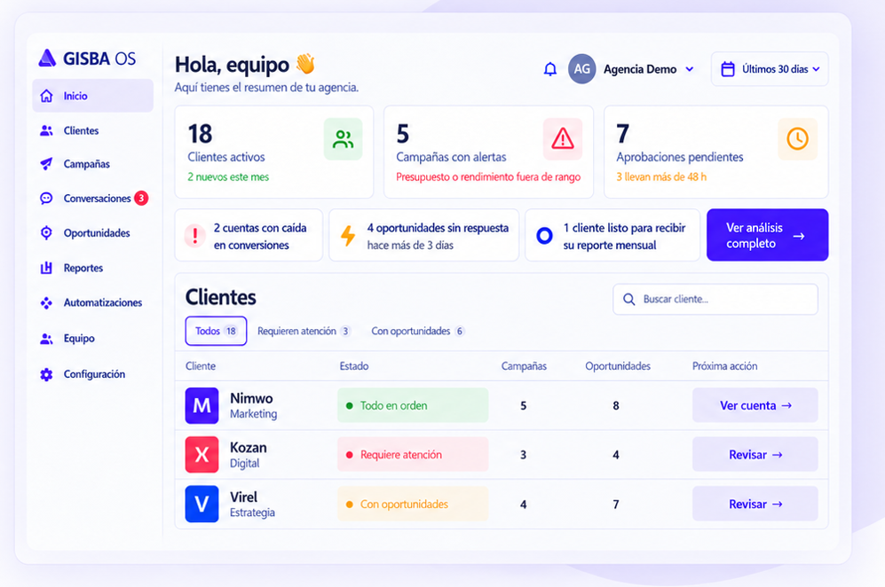
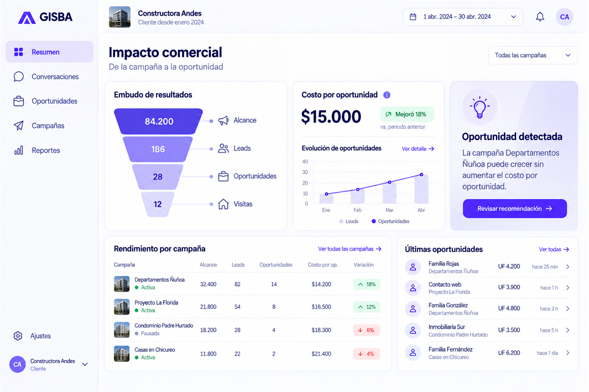

Más cuentas
con el mismo equipo

Para agencias de marketing
Centraliza todos tus clientes, campañas y oportunidades en un solo lugar. GISBA detecta dónde necesitas actuar y conecta lo que ocurre después de cada lead para que puedas demostrar resultados reales.
con el mismo equipo
antes
resultados

Clientes activos
↑ +12%Requieren atención
↑ +3Campañas en curso
↑ +8%Oportunidades
↑ +25%Vista por tipo de negocio


La forma de GISBA
Clientes, campañas, prioridades
y alertas en un solo lugar.
Conversaciones, seguimientos
y acciones repetitivas con
menos trabajo manual.
Conecta marketing, oportunidades
y resultados para mostrar
impacto real.
Diseñado para agencias que quieren escalar.
Agenda una demoTambién mejora la experiencia de tu cliente
GISBA OS no solo ordena la operación de tu agencia. También le da a cada cliente una experiencia más clara, profesional y conectada con sus oportunidades, cotizaciones y resultados.
Más claridadTu cliente entiende qué está pasando sin pedir reportes constantemente.
Más participaciónPuede revisar oportunidades, responder conversaciones y seguir el avance comercial.
Más confianzaTu agencia demuestra con claridad qué pasó desde la campaña hasta el resultado.
Más clientes. Mejores resultados. A largo plazo.
